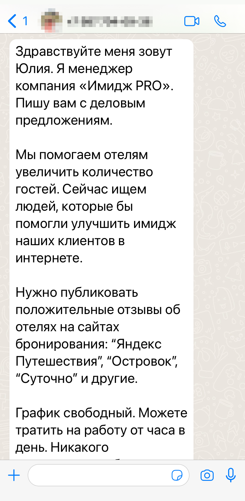
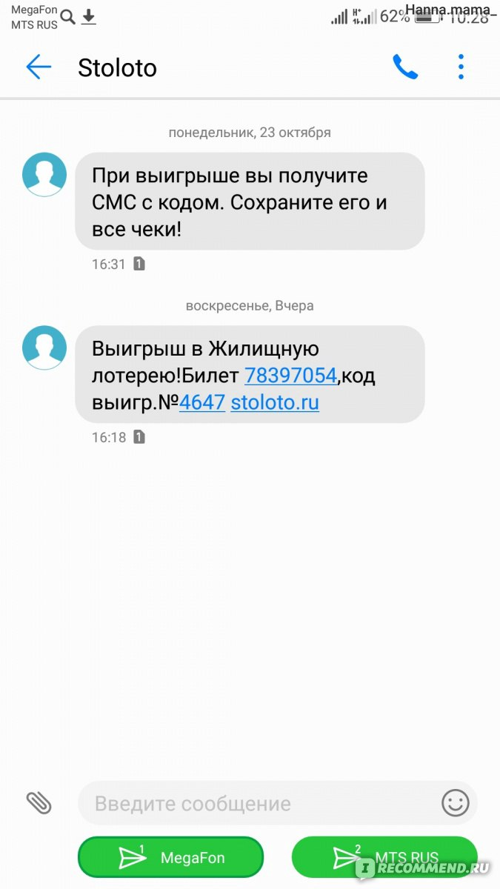
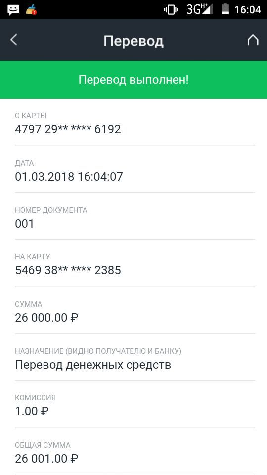
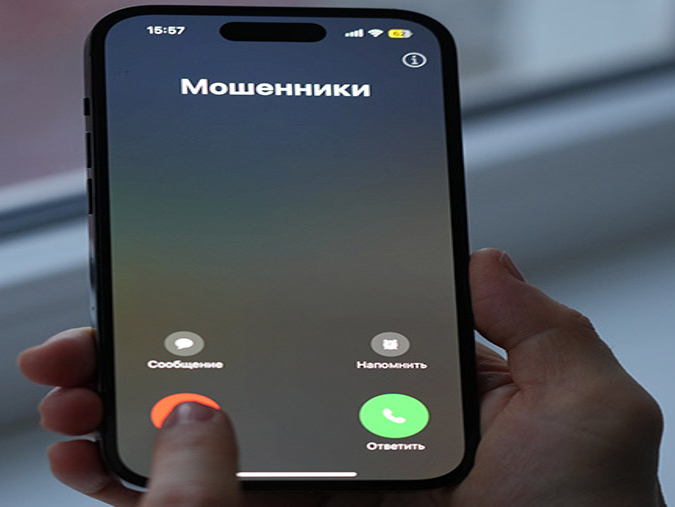
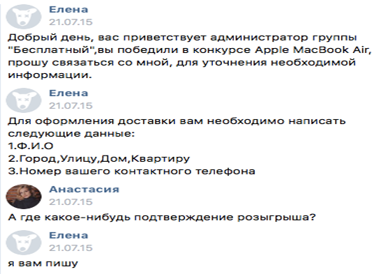
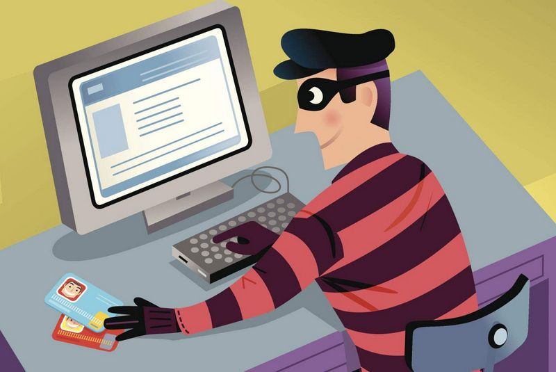
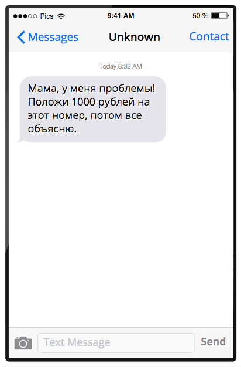
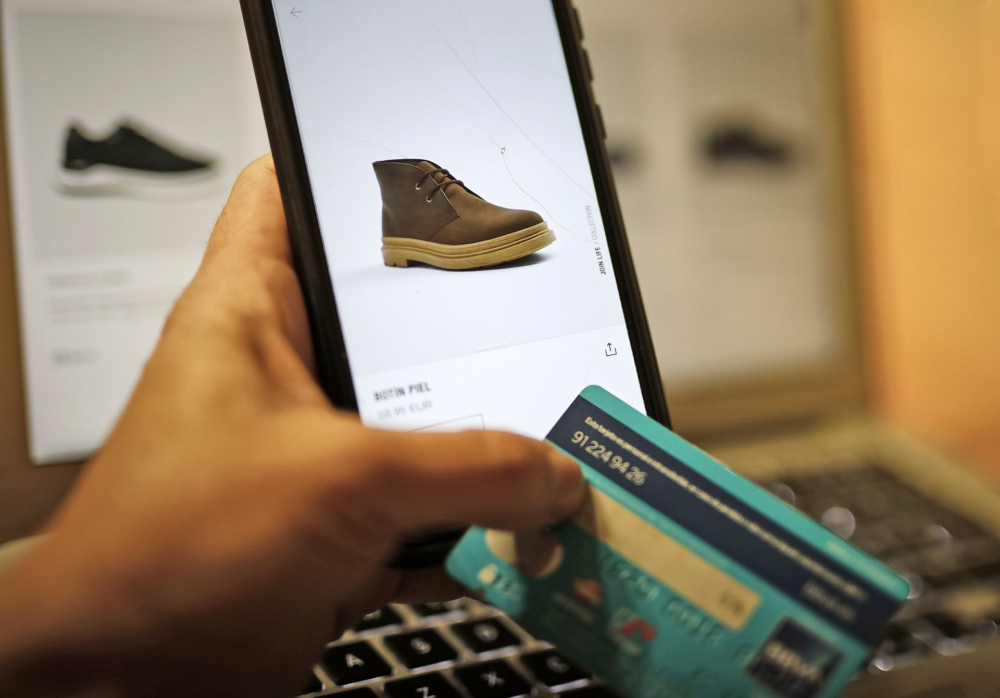

Мошенничество в интернете. Их виды и способы защиты от них.
Введение
Интернет-мошенничество - это вид преступления, при котором мошенники используют цифровые инструменты, такие как электронная почта или социальные сети, чтобы обманом заставить людей отдать деньги или ценную личную информацию.
Один из популярнейших видов онлайн-мошенничества это фишинг. Фишинг - это вид интернет-мошенничества цель которого - кража конфиденциальных данных пользователя через поддельные сайты и письма.
Здесь мы рассмотрим основные виды фишинга и способы защиты от них.
Виды мошенничества в интернете
1. Мошенничество с предложением работы
Вы получаете сообщение от незнакомого человека с предложением работы. Если вы выполните работу, с вами расплатятся на сумму, которая несколько больше оговоренной. После этого вас попросят вернуть разницу. Разумеется, чек оказывается фальшивкой, и вы лишаетесь тех денег, которые отправили фальшивому работодателю.

Способ защиты
Если вы согласились на предложение, никогда не обналичивайте подозрительные чеки не убедившись, что они не фальшивые. Если вас просят вернуть разницу – это явный признак того, что вы имеете дело с мошенником.
2. Мошенничество с лотереей
Вам приходит электронное письмо с сообщением, что вы выиграли крупную сумму в неизвестной лотерее. Для получения выигрыша вам предлагают заплатить деньги. Вас также просят прислать данные для подтверждения вашей личности, и вот вы уже жертва кражи персональных данных и денег.

Способ защиты
Если вы получили подобное письмо, попробуйте поискать информацию в интернете, подтверждающую, что вы действительно выиграли деньги. Никогда не отправляйте свои персональные данные по электронной почте людям, которых вы не знаете лично.
3. Мошенничество с переводом денег
Вы получаете электронное письмо от человека, которому нужно быстро перевести куда-то деньги, либо он их вам переводит и просит перевести на другой номер. Но перевод денег неизбежно откладывается, или вы переводите их, но тогда вы уже находитесь в мошенничесткой схеме. На вас будет заведено уголовное дело, как соучастник преступления.

Способ защиты
Если письмо содержит орфографические и грамматические ошибки, а адрес для обратного ответа не совпадает с адресом отправителя, то это точно мошенники.
4. Мошенничество, связанное с благотворительностью
Мошенники могут создавать поддельные сайты для пожертвований и открывать счета, а потом организовывать сбор денег, которые никогда не доходят до пострадавших.
Способ защиты
Проверяйте сайты для сбора пожертвований, чтобы убедиться, что они действительно собирают деньги на заявленные цели. У реально существующего благотворительного фонда должен быть информативный веб-сайт.
5. Мошенничество, связанное с техподдержкой
Вам звонит человек, представляется сотрудником компании-разработчика ПО и предлагает помощь в решении какой-либо компьютерной проблемы. Вам присылают ссылку на программу для удаленного доступа. При загрузке вы позволяете мошенникам получить контроль над вашим компьютером.

Способ защиты
Никогда не слушайте непрошеных советчиков, пока не убедитесь в том, что говорящий действительно тот, за кого себя выдает. Не предоставляйте никому удаленный доступ к вашему компьютеру.
6. Мошенничество в соцсетях
Вам предлагают пройти тест в соцсети или обещают заманчивый приз за победу в викторине. Выдав личные данные, мошенник может начать выдавать себя за вас в интернете.
Вам приходит запрос на дружбу от мошенника, который выдает себя за вашего знакомого. После этого он присылает вам фишинговую ссылку, которая ведет на вредоносный веб-сайт.
Вы загружаете из соцсети приложение, которое вам кажется легальным, а на самом деле устанавливает на ваше устройство вредоносное ПО.


Способ защиты
Никогда не участвуйте в тестах, не нажимайте на всплывающие уведомления. Не переходите по ссылкам и не открывайте вложения, содержащиеся в письмах из неизвестных источников.
7. Мошенничество с использованием голосовых ботов
Если вы слышите в трубке не живого человека, а записанный голос – значит, это голосовой бот. Голосовые боты иногда несут полезную информацию, но чаще всего их используют мошенники. Звонок от имени крупной технологической компании, звонок с предложением бесплатной пробной версии продукта для установки вируса и другое.
Способ защиты
Лучше всего вообще не отвечать на звонок, если вы подозреваете, что звонит бот. Не всегда это можно понять заранее, поэтому если уж вы ответили на звонок, повесьте трубку сразу же, как только поймете, что это голосовой бот.
8. Мошенничество через сообщения
Фишинг с использованием службы SMS получил название «смишинг», например: Вы получаете SMS-сообщение о том, что вам пришла посылка, для получения которой необходимо подтвердить свою личность. Вы получаете сообщение якобы от вашего банка о том, что ваша банковская карта будет заблокирована, а на вас будет наложен штраф.

Способ защиты
Если организация, от имени которой пришло сообщение, раньше не связывалась с вами через мессенджер, это первый тревожный сигнал. Официальные организации не будут отправлять неожиданные сообщения через мессенджер.
9. Мошенничество через интернет-магазины
Поддельные сайты интернет-магазинов чаще всего выглядят совсем как настоящие. Мошенники крадут логотипы и копируют дизайн страниц. На таких сайтах пользователям предлагают популярные товары по низким ценам.

Способ защиты
Если какой-либо товар предлагают по невероятно низкой цене – это явный признак мошенничества. Еще один признак – если продавец настаивает на предоплате. Иногда вам даже предлагают приобрести ваучеры, чтобы получить доступ к скидкам.
Но не стоит забывать о том, что мошенничество всё больше прогрессирует и появляется много новых обманных схем и предложений, особенно с появлением ИИ. Так что нужно быть всегда начеку в интернете и не дать себя обмануть.
Закрепление материала
Теперь давайте закрепим знания! Узнайте ваш уровень знаний, пройдя небольшой тест. Нажмите на кружок рядом с ответом. Если он загорится зелёным, то ответ правильный, а если красным, то неправильный.
1.
Что такое фишинг?
Вид интернет-мошенничества цель которого - кража конфиденциальных данных пользователя через поддельные сайты и письма.
Вид интернет-мошенничества цель которого - взлом или атака устройств для личных целей.
Вид интернет-мошенничества цель которого - защита и "обеление" опасных или экстремистских веб-сайтов от антивирусов.
Вид интернет-мошенничества цель которого - получить контроль над устройством или сервером для скачивания важных данных.
2.
Что нужно сделать, если вам пришло письмо о выигрыше в лотерее и вас просят ввести личные данные?
Ввести личные данные и ждать приза.
Поговорить с человеком, который отправил письмо, чтобы он подтвердил выигрыш
Поискать информацию в интернете об этой лотерее, подтверждающую, что вы действительно выиграли деньги или приз.
3.
Что нужно сделать, если вам отправили деньги и просят перевести их на другой номер?
Узнать, кто просит эти деньги.
Посмотреть номер карты отправителя и карты, куда переводятся деньги.
Оставить эти деньги себе и игнорировать отправителя.
Послушаться и перевести деньги на карту.
4.
Как лучше всего вести себя в соцсетях?
Вести активные разговоры со всеми и участвовать во всех розыгрышах.
Не общаться с незнакомцами и не участвовать в сомнительных розыгрышах.
Быть очень общительным и рассказывать новым "друзьям" о себе.
Помогать незнакомцам в лёгких делах, чтобы хорошо заработать.
5.
Что такое смишинг?
Вид фишинга с завлечением внимания пользователя.
Смешная шутка или картинка в интернете.
Ложные новости якобы от СМИ.
Вид фишинга с использованием службы SMS.
Теперь вы хорошо подготовились и больше знаете о видах интернет-мошенничества и способах защиты от них. И ваше времяпрепровождение в интернете будет намного безопаснее, чем раньше!